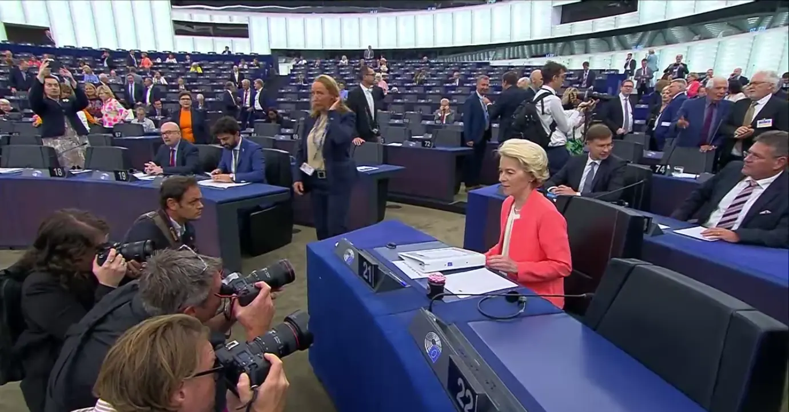

SOTEU2023 - Auf der Stelle treten

Blog, 27/06/2023, by Sven Franck
Gestern hielt die Präsidentin der Kommission, Ursula von der Leyen, ihre letzte Rede zur Lage der Europäischen Union vor den Europawahlen 2024, in der sie ihre Ideen für das kommende Jahr skizzierte. Die Rede erfolgte in Englisch, Deutsch und Französisch - wie es sein sollte. Dennoch werden Experten argumentieren, dass die Präsidentin der Kommission morgens um 9 Uhr nicht die Europäer ansprach, sondern vielmehr ihre parlamentarische Gruppe im Hinblick auf ihre Kandidatur für eine zweite Amtszeit. Und obwohl sie viele Themen behandelte, einschließlich ihrer Ambitionen, das europäische Projekt abzuschließen, kündigte sie keine greifbaren Schritte zu dessen Weiterentwicklung an. Statt Vertragsänderungen bewarb sie eine Fülle von Verpflichtungen, symbolischen Konferenzen, Vorschriften und Berichten. Europa wird im Jahr 2024 eine Wirtschaftsunion bleiben, die sich weiterhin davor scheut, die demokratischen und solidarischen Dimensionen hinzuzufügen, die ihr heute so sehr fehlen.
Die Vollendung des europäischen Projekts
Die Anspielung auf das Europäische Bauhaus, das Konzept, das Ursula von der Leyen zu Beginn ihrer Amtszeit hervorrief, ist offensichtlich. Es wäre natürlich passend, das europäische Projekt mit dem Beitritt von Ländern wie der Ukraine, Moldawien und Ländern des Balkans zu vollenden. Aber ist Europa mit diesen Ländern komplett? Georgien wurde übergangen, und nur weil das Vereinigte Königreich beschloss zu gehen, bedeutet das nicht, dass es kein integraler Bestandteil der Europäischen Union war und nicht willkommen wäre, sobald das Land wieder mehrheitlich Unterstützer des europäischen Projekts ist. Was ist mit anderen Ländern wie der Schweiz? Es mag eine Endgültigkeit im Mandat der Präsidentin der Kommission geben, aber es ist schwer zu behaupten, dass das europäische Projekt jemals abgeschlossen werden kann. Es ist eher eine Dauerbaustelle - sowohl im Innenbereich als auch in Sachen Fassade. Es wird immer etwas zu verbessern und zu reparieren geben. Seltsamerweise gab es keine Erwähnung von vorhandenen Rissen und der Notwendigkeit eines Bauhaus-artigen Eingreifens in Polen und Ungarn nach ihrer "DIY" Initiative zur Renovierung demokratischer Prinzipien. Über die Vollendung zu sprechen, ist ähnlich wie das Ignorieren der Notwendigkeit europäischer Verträge weiterzuentwickeln. Diese sind scheinbar in Stein gemeißelt sein und von der Präsidentin der Kommission und den Mitgliedstaaten wird es tunlichst vermieden, selbst die offensichtlichsten Mängel wie das Veto und die Einstimmigkeitsentscheidungen zu beheben. Unsere Union ist vielmehr ein lebender Organismus: Sie wächst auf gute und schlechte Weise, und die Regeln und Vorschriften, die vielleicht vor 30 Jahren zweckmäßig waren, müssen sich an die sich ändernde Umgebung anpassen. Mutige Schritte sind erforderlich, um das europäische Projekt voranzubringen. Die Präsidentin der Kommission wird stattdessen in 2024 auf der Stelle treten.
Ein Beauftragter für KMUs - bereits 2008 vorgeschlagen
Eine der drei proklamierten Hauptaufgaben für die Europäische Union besteht darin, die bürokratischen Hürden für KMUs auf europäischer und nationaler Ebene um 25% zu reduzieren. Ambitionierte Ziele, begleitet von einem Beauftragten, der direkt an die Präsidentin der Kommission berichtet, und einer Überprüfung der Auswirkungen neuer Gesetzgebung auf kleine Unternehmen. Klingt innovativ, ist es aber nicht. Bereits 2008 hat die Europäische Kommission den "Small Business Act for Europe" vorgeschlagen, der nicht nur die Überprüfung der Gesetzgebung auf Kompatibilität mit kleinen Unternehmen vorsieht, sondern auch die Ernennung von KMU-Beauftragten zur Verbindung zwischen der Kommission und KMUs. Und selbst 15 Jahre zu spät, ist es weit entfernt vom US Small Business Act, der darauf abzielt, die Interessen kleiner Unternehmen zu unterstützen und zu schützen und 20 % aller öffentlichen Aufträge an KMUs weiterzuleiten.
Auch in regulatorischer Hinsicht geht die EU in die entgegengesetzte Richtung: Der Cyber Resilience Act, der derzeit in das Trilog-Verfahren eintritt, enthält Bestimmungen, die von der Kommission selbst auf mindestens 40.000 € zusätzliche Bürokratiekosten für Unternehmen geschätzt werden. Schlimmer noch, es besteht das erhebliche Risko, das das europäische Open-Source-Ökosystem - hauptsächlich KMUs - dem Cyber Resilience Act zum Opfer fällt, der vorsieht, dass jeder, der Quellcode veröffentlicht, für Schäden haftbar gemacht werden kann, die Dritte bei der Verwendung dieses Codes in ihren Produkten verursachen. Open Source-Software trägt zwischen 65 Mrd. € und 85 Mrd. € zur europäischen Wirtschaft bei. Open Source ist entscheidend für die strategische Autonomie und den Wettbewerb mit globalen Players wie Google und Amazon. Statt jedoch von der US-amerikanischen nationalen Cybersicherheitsstrategie abzukupfern, die die Verantwortung beim Akteur sieht, der am besten in der Lage ist, Maßnahmen zur Verhinderung von Schäden zu ergreifen und dabei ausdrücklich Endbenutzer und Open-Source-Entwickler ausschließt, akzeptiert die Europäische Kommission, dass unsere KMUs Europa verlassen oder den Betrieb einstellen. Kleine Unternehmen sind das Rückgrat und die Vielfalt unserer Wirtschaft. Die Kommission Ihren Worten Taten folgen lassen, und KMUs nicht durch zusätzliche Bürokratie bedrohen.
Migration durch Delegation von Verantwortung im Ausland verwalten
Die Präsidentin der Kommission beschrieb zu Recht die Schwierigkeiten, mit denen unsere Volkswirtschaften heute bereits konfrontiert sind, um qualifiziertes Personal zu finden. Europa verliert Chancen, und die demografische Entwicklung wird dies mit einer Schrumpfung unserer erwerbsfähigen Bevölkerung um 23 % von 414 Millionen auf 317 Millionen bis 2100 noch verschlimmern ganz abgesehen von der gleichzeitig steigenden Zahl von Rentnern und dem Druck auf unsere Sozialversicherungssysteme. Wir können natürlich das Rentenalter weiter erhöhen oder, wie von der Präsidentin der Kommission skizziert, die weibliche Erwerbsbevölkerung, NEETs ("Not in education, employment or training) und, Trommelwirbel..., die Einwanderung mobilisieren, um unsere Wirtschaft am Laufen zu halten. Deutschland benötigt bereits 400.000 Einwanderer pro Jahr, Ungarn gibt an, 500.000 Einwanderer zu benötigen und sogar Italien kann nicht anders, als in den nächsten drei Jahren im Ausland nach 800.000 Einwanderern zu suchen, um offene Stellen in ihren Branchen zu besetzen. Die Kommission hat recht, die Einwanderung kontrollieren und Menschenhandel zu bekämpfen zu wollen. Die getroffenen Vereinbarungen mit der Türkei oder aktuell Tunesien bedeuten jedoch, dass diese "Kontrolle" effektiv an Länder außerhalb der Europäischen Union ausgelagert wird - oft mit zweifelhaften Ruf in Bezug auf Menschenrechte und humane Behandlung von Einwanderern. Schlimmer noch, anstatt selbst zu agieren, zwingt die Kommission Europe, zu reagieren, indem sie versucht, Brände mit Bargeld zu löschen. Europa ist in der Lage, finanzielle Transaktionen auf dem gesamten Kontinent zu überwachen. Das Gleiche wäre für die Einwanderung möglich, wenn die Kommission und die Mitgliedstaaten akzeptierten, gemeinsam zum Nutzen unserer Volkswirtschaften zusammenzuarbeiten. Illegale Einwanderung wird keine Rolle mehr spielen, wenn es zugängliche legale Wege in die Europäische Union gibt. Ein 6-12 Monate gültiges Arbeitsvisum, das unter anderem bei Vorlage eines Rückflugtickets und einer Kaution zur Deckung möglicher Abschiebungskosten ausgestellt werden könnte, würde bedeuten, dass Einwanderer legal nach Europa kommen können, um Arbeit zu finden, anstatt zu versuchen, die Wüste und das Mittelmeer zu durchqueren, was das Vielfaches kosten würde und mit hohen Risiken und unsicherem Ausgang verbunden ist. Einwanderung wird in Zukunft für unsere Volkswirtschaften unerlässlich sein, und um sie zu einem Erfolgsfaktor zu machen, muss die Europäische Kommission pragmatisch, visionär und vorausschauend handeln.
Dies sind nur einige Aspekte einer SOTEU-Rede 2024, die mit "Reisen, ohne sich zu bewegen" zusammengefasst werden kann. Die Präsidentin der Kommission scheute sich vor wegweisenden Ankündigungen, insbesondere hinsichtlich der Weiterentwicklung des europäischen Projekts. Es war eine Rede, die die vielfachen Herausforderungen, vor denen wir als Europäer stehen, ausführte. Die vorgeschlagenen Lösungen für diese Herausforderungen wirken jedoch lustlos und oberflächlich - wie Reisen, ohne sich zu bewegen. Das europäische Projekt ist zwar bereits sehr weit gekommen, aber um die nächsten Schritte zu gehen, benötigen wir eine größere Vision als das Hinzufügen einiger Länder. Wir brauchen mutigere Schritte als symbolische Konferenzen und Gipfeltreffen. Wir brauchen konkrete Verpflichtungen für unsere KMUs anstelle von wiederverwerteten Vorschlägen und einer übermäßigen Bürokratie. Wir benötigen eine langfristige Perspektive darüber, wie wir die Einwanderung in die Lebensader verwandeln, die unsere Unternehmen in der Zukunft benötigen. All dies sind große Anforderungen, und die Europawahlen werden erneut die Möglichkeit bieten, einen Spitzenkandidaten zu wählen. Hoffen wir, dass diesmal ihre Wahl respektiert wird und unser nächster Präsident der Kommission uns weiter auf dem Weg zur Europäischen Union führt, die wir benötigen.